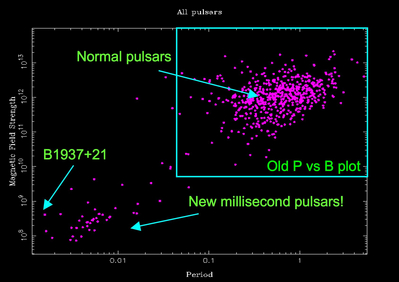

A millisecond pulsar is a type of radio or X-ray pulsar that has a rotation period measured in a small number of milliseconds, usually below 30 ms.
History
The first millisecond pulsar was the celebrated 1.55 ms pulsar PSR B1937+21, which, for over 20 years was the fastest pulsar known. This pulsar had a very small magnetic field strength (~108.5 Gauss) and a rotation period some 20 times faster than the next-fastest pulsar, which was the Crab pulsar.

Recycled Pulsars
Many pulsar astronomers refer to recycled pulsars as millisecond pulsars somewhat interchangeably. This is because we now believe that millisecond pulsars are created by the recycling of an otherwise dead pulsar through the accretion of matter. This both causes the pulsar to “spin-up” and reduces its magnetic field strength. In contrast to the “normal” pulsars, of which only ~1% are binary, millisecond pulsars have a very high binary fraction (>50%). This is consistent with the spin-up hypothesis.
All of the currently known binary millisecond pulsars have either white dwarfs or very low-mass companions. A possible exception is the millisecond pulsar discovered in late 2006 by the PALFA survey which has an eccentric orbit and probably a neutron star companion.